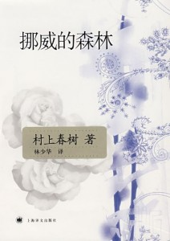
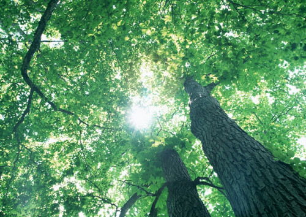

挪威的森林
作者：村上春树
摘抄人：吴泽发 时间：2014.3
（一）每个人都有属于自己的一片森林，也许我们 从来不曾去过，但它一直在那里，总会在那里。迷失的人迷失了，相逢的人会再相逢。
（二）哪里会有人喜欢孤独,不过是不喜欢失望。
（三）希望你可以记住我，记住我这样活过，这样在你身边呆过。
（四）少年时我们追求激情，成熟后却迷恋平庸，在我们寻找，伤害，背离之后，还能一如既往的相信爱情，这是一种勇气。每个人都有属于自己的一片森林，迷失的人迷失了，相逢的人会再相逢。
（五）死并非生的对立面，而作为生的一部分永存。
（六）不要同情自己，同情自己是卑劣懦夫干的勾当。
（七）“最最喜欢你，绿子。”“什么程度？”“像喜欢春天的熊一样。”“春天的熊？”绿子再次扬起脸，“什么春天的熊？”“春天的原野里，你一个人正走着，对面走来一只可爱的小熊，浑身的毛活像天鹅绒，眼睛圆鼓鼓的。它这么对你说到：‘你好，小姐，和我一块打滚玩好么？’接着，你就和小熊抱在一起，顺着长满三叶草的山坡咕噜咕噜滚下去，整整玩了一大天。你说棒不棒？”“太棒了。”“我就这么喜欢你。”
（八）我们的正常之处,就在于自己懂得自己的不正常。
（九） 或许我的心包有一层硬壳，能破壳而入的东西是极其有限的。所以我才不能对人一往情深。
（十）正值青春年华的我们，总会一次次不知觉望向远方，对远方的道路充满憧憬，尽管忽隐忽现，充满迷茫。有时候身边就像被浓雾紧紧包围，那种迷茫和无助只有自己能懂。尽管有点孤独，尽管带着迷茫和无奈，但我依然勇敢地面对，因为这就是我的青春，不是别人的，只属于我的。
（十一）任凭怎么解释，世人也只能相信自己愿意相信的事情。越是拼命争扎，我们的处境越是狼狈。
（十二）if you're in pitch blackness, all you can do isit tight until your eyeget used to the dark.如果你掉进了黑暗里，你能做的，不过是静心等待，直到你的双眼适应黑暗。
（十三）一切都清晰得历历如昨的时候，反而不知如何着手，就像一张详尽的地图，有时反倒因其过于详尽而派不上用场。但我现在明白了：归根结蒂，我想，文章这种不完整的容器所能容纳的，只能是不完整的记忆和不完整的意念。
（十四）我们活着，同时在孕育死亡。不过，那只不过是我们必须学习的真理的一部分。直子的死告诉我这件事。不管拥有怎样的真理，失去所爱的人的悲哀是无法治愈的。无论什么真理、诚实、坚强、温柔都好，无法治愈那种悲哀。我们惟一能做到的，就是从这片悲哀中挣脱出来，并从中领悟某种哲理。而领悟后的任何哲理，在继之而来的意外悲哀面前，又是那样地软弱无力--我形影相吊地倾听这暗夜的涛声和风响，日复一日地如此冥思苦索。
（十五）我想起自己在过去的人生旅途中失却的许多东西——蹉跎的岁月，死去或离去的人们，无可追回的懊悔。
（十六）绅士就是：所做的，不是自己想做的之事，而是自己应做之事。
（十七）不要因为寂寞随便牵手，然后依赖上，人自由自在多好，纵使漂泊，那种经历也好过牢狱般的生活，所以我刻意不让自己对网络太依赖，对失去的人也保持淡然的态度，数千个擦肩而过中，你给谁机会谁就和你有缘分，纵没有甲，也会有乙。
（十八）孤单时，仍要守护你心中的思念。
（十九）喜欢到全世界森林里的老虎都融化成黄油。
（二十）这世上，除了你我别无所求。
（二一）这是初秋一个天朗气清的午后——同恰好一年前我去京都探望直子时一模一样。云如枯骨，细细白白，长空寥廓，似无任何遮拦。又是一个秋天，我想。风的气息，光的色调，草丛中点缀的小花，一个音节留下的回响，无不告知我秋天的到来。四季更迭，我与死者之间的距离亦随之渐渐拉开。木月照旧十七，直子依然二十一，永远地。
（二二）丧失至爱的哀伤，是无法治愈的，不管是什么样的真理，什么样的诚实，怎样坚强，怎样温柔，也无法浮萍这哀伤，我们只能够……从哀伤中挣脱出来，从中领悟点什么，但无论领悟到什么，下次哀伤袭来时，还是派不上用场。
（二三）我总是一边盯着飘浮在这静谧的空间里闪闪发光的光粒子,一边努力试着探索自己。我究竟在追求些什么?而人们究竟希望我给他们什么?但我始终找不到一个像样的答案。我对着飘浮在空中的光粒子伸出手去,却什么也碰不到。
（二四）映现在我眼前的只有永无尽头的泥沼。右脚往前踏出一步。举起左脚，然后又是右脚。我无法找到自己的定位。也无法确信是否往正确的方向前进。只知道必须往前走，于是一步一步地往前。
（二五）在永泽的体内同时存在着几种完全矛盾的性格,十分走极端。他有时极其温柔,温柔到连我都不由得感动的地步,有时则又极其冷酷、恶毒;有着高贵得出奇的精神层面,同时又是个无可救药的俗物;能够一面统率众人乐观奋斗,一面却兀自在阴郁的泥淖中痛苦挣扎。打一开始,我便清楚地意识到他的这种矛盾性格,我实在搞不懂其他的人为什么都看不见他这一面。他是背负着他自己的地狱过日子的。
（二六）天地间的一切全都红彤彤一片。我的手、碟子、桌子，凡是目力所及的东西，无不被染成了红色，而且红得非常鲜艳，俨然被特殊的果汁从上方直淋下来。就在这种气势夺人的暮色当中，我猛然想起了初美，并且这时才领悟她给我带来的心灵震颤是什么东西。
（二七）对某种人来说，爱是从根本不值一提，或者非常无聊的小事萌芽的。要不然就萌芽不了。
（二八）有时看遍这个世界后，真的令人厌烦。为何那些家伙不努力呢？没有努力又怎能光是抱怨这个世界不公平？
（二九）纵令听其自然，世事的长河也还是要流往其应流的方向，而即使再竭尽人力，该受伤害的人也无由幸免。
（三十）我追求的是一种单纯的爱情，一种完美的真情。比方说，现在我跟你说我想吃草莓蛋糕，你就丢下一切，跑去为我买！然后喘着气回来对我说：”阿绿！你看！草莓蛋糕！放到我面前。但是我会说：“哼！子安在我不想吃啦！然后就把蛋糕从窗子丢出去。我要的爱情是这样的。”